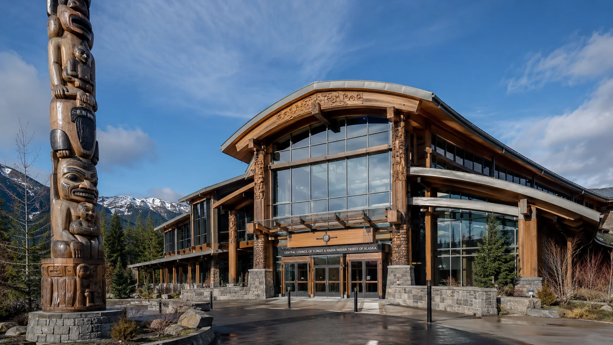

Forward Deployment Engineer, AI Prompt Engineer, and Applied ML Specialist. Co-founder of Island Mountain, building sovereign on-premises AI for regulated industries.
basho@islandmountain.io · 1-341-441-8740 · islandmountain.io · Trinity Corridor, Northern California
I single-handedly do the work of a full engineering team. 3+ years of applied AI in production: LLM-augmented legal research and case analysis, AI-driven emergency management planning for tribal governments, on-premises inference hardware architecture and installation, and open-source tooling shipped for regulated industries. I built a multi-provider, OpenAI-compatible LLM abstraction layer that manages provider diversity, model selection, fallback behavior, and endpoint variation across DeepSeek R1, Qwen3, Gemma, and OpenRouter-exposed models, so I understand provider routing, inconsistent-response debugging, and latency-versus-cost tradeoffs from the developer side. Co-founder of Island Mountain AI, a sovereign RTX PRO 6000 Blackwell on-premises inference server company. Creator of Lamprey, an open-source LLM coding IDE, and Lamprey MAI, a Rust-based inference governance layer with OpenBao trust gating. Author of a white paper submitted to the Homeland Security Affairs Journal on the gap between AI-agentic operational capability and CPG 201 federal emergency planning doctrine. Certified across the full Anthropic platform stack, from API fundamentals through Model Context Protocol advanced topics.
Technical depth and audience translation are one skill in my work, not two. I have explained inference cost and latency tradeoffs to non-technical tribal leadership and to attorneys, moved work from "the API call works" to "this survives production," and written for regulated-industry developers who can tell the difference between content that earns their trust and content that signals the marketing department got involved. Range across registers, without losing precision in any of them, is the core of what I do. I know this stack and pipeline the way you know your own hands.
Island Mountain AI · Northern California
Yurok Tribe Office of Emergency Services · Weitchpec, California
Independent Practice · Remote
Prompt pipeline architecture; chain-of-thought and multi-step pipeline design; tool-use and MCP integration; Claude, DeepSeek R1, Qwen3, Gemma, OpenRouter; RAG pattern design; structured output engineering; inference governance.
On-premises RTX PRO 6000 Blackwell stack deployment; air-gapped inference environments; OpenBao trust gate configuration; Anthropic and OpenAI-compatible API integration; Python scripting and automation; Electron desktop application development.
LLM citation-surface tuning; generative engine optimization; technical SEO audits; city landing page architecture; Google Ads and OpenAI Ads campaign strategy; lead generation funnel design.
CPG 201, HIRA, LHMP, EOP, HSEEP; THSGP, BRIC, HMGP, EMPG grant writing; tribal emergency management; ICS; NIMS.
Technical white papers; federal grant proposals; legal brief drafting; academic and regulatory writing; AI-native content production; brand voice and marketing copy.
OpenAI-compatible APIs; OpenRouter; REST and streaming APIs; Anthropic API; SDK integration; provider routing; model fallback; structured outputs; MCP server integration.
Python (scripting, automation, API integration); Rust; Electron; SQLite; OpenBao; GGUF and llama.cpp; Ollama; OpenWebUI; Git and GitHub.
Parks, B. The Moving Ceiling: AI-Agentic Capabilities and the Adequacy Gap in CPG 201 Emergency Planning Doctrine. Homeland Security Affairs Journal. Manuscript under peer review as of June 2026.
Open-source Electron LLM coding IDE with a Planner-Coder-Reviewer agent pipeline, MCP support, DeepSeek, Qwen3, Gemma, and OpenRouter backends, and local SQLite persistence.
Rust-based model abstraction interface with a Tock-kernel-derived inference engine and OpenBao trust gate envelope for compliance-governed inference in regulated industries.
Available for forward-deployment, prompt engineering, and emergency management work. One conversation, no pitch.
Or call directly: 1-341-441-8740